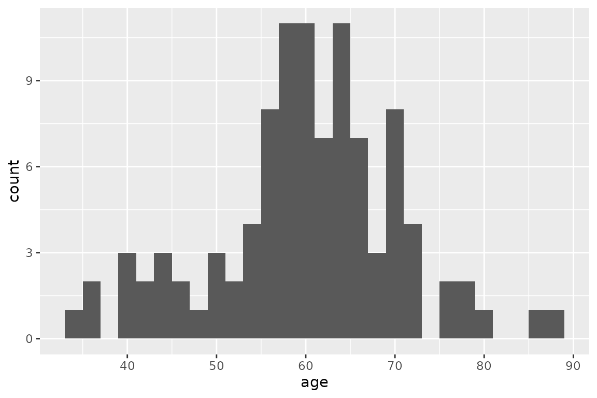
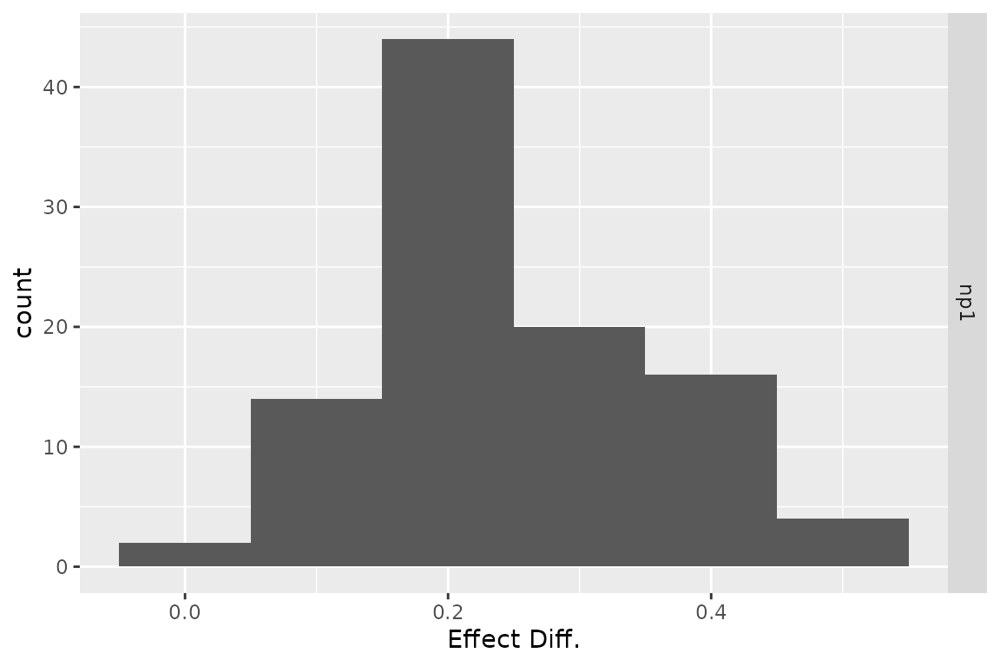

Heterogeneity & Demographic Analysis
2024-09-11
Source:vignettes/g_heterogeneity.Rmd
g_heterogeneity.RmdIntroduction
Heterogeneity analysis is a way to explore how the results of a model can vary depending on the characteristics of individuals in a population, and demographic analysis estimates the average values of a model over an entire population.
In practice these two analyses naturally complement each other: heterogeneity analysis runs the model on multiple sets of parameters (reflecting different characteristics found in the target population), and demographic analysis combines the results.
For this example we will use the result from the assessment of a new
total hip replacement previously described in
vignette("d-non-homogeneous", "heemod").
Population characteristics
The characteristics of the population are input from a table, with one column per parameter and one row per individual. Those may be for example the characteristics of the indiviuals included in the original trial data.
For this example we will use the characteristics of 100 individuals,
with varying sex and age, specified in the data frame
tab_indiv:
tab_indiv## # A tibble: 100 × 2
## age sex
## <dbl> <int>
## 1 46 1
## 2 63 1
## 3 36 0
## 4 60 1
## 5 66 1
## 6 71 0
## 7 42 0
## 8 58 0
## 9 58 0
## 10 57 0
## # ℹ 90 more rows
library(ggplot2)
ggplot(tab_indiv, aes(x = age)) +
geom_histogram(binwidth = 2)
Running the analysis
res_mod, the result we obtained from
run_model() in the Time-varying Markov models
vignette, can be passed to update() to update the model
with the new data and perform the heterogeneity analysis.
res_h <- update(res_mod, newdata = tab_indiv)## No weights specified in update, using equal weights.## Updating strategy 'standard'...## Updating strategy 'np1'...Interpreting results
The summary() method reports summary statistics for
cost, effect and ICER, as well as the result from the combined
model.
summary(res_h)## An analysis re-run on 100 parameter sets.
##
## * Unweighted analysis.
##
## * Values distribution:
##
## Min. 1st Qu. Median Mean
## standard - Cost 470.23578695 605.0062810 627.884711 682.7006080
## standard - Effect 5.05860925 23.3226486 26.729786 25.5485488
## standard - Cost Diff. - - - -
## standard - Effect Diff. - - - -
## standard - Icer - - - -
## np1 - Cost 599.19333183 635.5509751 641.771296 657.7078579
## np1 - Effect 5.07524179 23.4706053 27.104563 25.7985684
## np1 - Cost Diff. -159.96283707 -99.5031416 13.886585 -24.9927501
## np1 - Effect Diff. 0.01663254 0.1948185 0.220806 0.2500196
## np1 - Icer -351.98058303 -304.0330575 62.931813 136.7249818
## 3rd Qu. Max.
## standard - Cost 786.6690449 871.1621236
## standard - Effect 29.0596426 31.6837747
## standard - Cost Diff. - -
## standard - Effect Diff. - -
## standard - Icer - -
## np1 - Cost 687.1659033 711.1992865
## np1 - Effect 29.2683350 31.9214350
## np1 - Cost Diff. 30.5446941 128.9575449
## np1 - Effect Diff. 0.3272774 0.4544649
## np1 - Icer 156.7853582 7753.3265967
##
## * Combined result:
##
## 2 strategies run for 60 cycles.
##
## Initial state counts:
##
## PrimaryTHR = 1000L
## SuccessP = 0L
## RevisionTHR = 0L
## SuccessR = 0L
## Death = 0L
##
## Counting method: 'beginning'.
##
## Values:
##
## utility cost
## standard 25548.55 682700.6
## np1 25798.57 657707.9
##
## Efficiency frontier:
##
## np1
##
## Differences:
##
## Cost Diff. Effect Diff. ICER Ref.
## np1 -24.99275 0.2500196 -99.96315 standardThe variation of cost or effect can then be plotted.
plot(res_h, result = "effect", binwidth = 5)
plot(res_h, result = "cost", binwidth = 50)
plot(res_h, result = "icer", type = "difference",
binwidth = 500)
plot(res_h, result = "effect", type = "difference",
binwidth = .1)
plot(res_h, result = "cost", type = "difference",
binwidth = 30)
The results from the combined model can be plotted similarly to the
results from run_model().
plot(res_h, type = "counts")
Weighted results
Weights can be used in the analysis by including an optional column
.weights in the new data to specify the respective weights
of each strata in the target population.
tab_indiv_w## # A tibble: 100 × 3
## age sex .weights
## <dbl> <int> <dbl>
## 1 64 1 0.361
## 2 61 0 0.653
## 3 49 1 0.144
## 4 54 0 0.681
## 5 71 0 0.859
## 6 67 1 0.839
## 7 60 0 0.881
## 8 56 1 0.238
## 9 68 0 0.579
## 10 68 1 0.898
## # ℹ 90 more rows
res_w <- update(res_mod, newdata = tab_indiv_w)## Updating strategy 'standard'...## Updating strategy 'np1'...
res_w## An analysis re-run on 100 parameter sets.
##
## * Weights distribution:
##
## Min. 1st Qu. Median Mean 3rd Qu. Max.
## 0.02388 0.34106 0.58941 0.54459 0.77117 0.98327
##
## Total weight: 54.45903
##
## * Values distribution:
##
## Min. 1st Qu. Median Mean
## standard - Cost 438.70535048 605.0062810 629.340630 685.8434629
## standard - Effect 5.05860925 23.2857244 26.729786 25.4564756
## standard - Cost Diff. - - - -
## standard - Effect Diff. - - - -
## standard - Icer - - - -
## np1 - Cost 590.76054210 635.5509751 642.167386 658.6181488
## np1 - Effect 5.07524179 23.4371897 27.104563 25.7095318
## np1 - Cost Diff. -163.38052116 -99.5031416 12.808817 -27.2253141
## np1 - Effect Diff. 0.01159912 0.1948185 0.220806 0.2530562
## np1 - Icer -353.62679735 -304.0330575 60.156709 246.3188220
## 3rd Qu. Max.
## standard - Cost 786.6690449 875.943516
## standard - Effect 29.6867852 31.529255
## standard - Cost Diff. - -
## standard - Effect Diff. - -
## standard - Icer - -
## np1 - Cost 687.1659033 712.562995
## np1 - Effect 30.1262538 31.765192
## np1 - Cost Diff. 30.5446941 152.055192
## np1 - Effect Diff. 0.3272774 0.462014
## np1 - Icer 156.7853582 13109.195655
##
## * Combined result:
##
## 2 strategies run for 60 cycles.
##
## Initial state counts:
##
## PrimaryTHR = 1000L
## SuccessP = 0L
## RevisionTHR = 0L
## SuccessR = 0L
## Death = 0L
##
## Counting method: 'beginning'.
##
## Values:
##
## utility cost
## standard 25456.48 685843.5
## np1 25709.53 658618.1
##
## Efficiency frontier:
##
## np1
##
## Differences:
##
## Cost Diff. Effect Diff. ICER Ref.
## np1 -27.22531 0.2530562 -107.586 standardParallel computing
Updating can be significantly sped up by using parallel computing. This can be done in the following way:
- Define a cluster with the
use_cluster()functions (i.e.use_cluster(4)to use 4 cores). - Run the analysis as usual.
- To stop using parallel computing use the
close_cluster()function.
Results may vary depending on the machine, but we found speed gains to be quite limited beyond 4 cores.